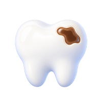
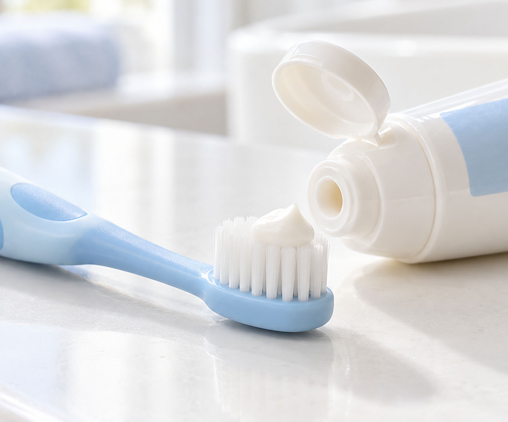
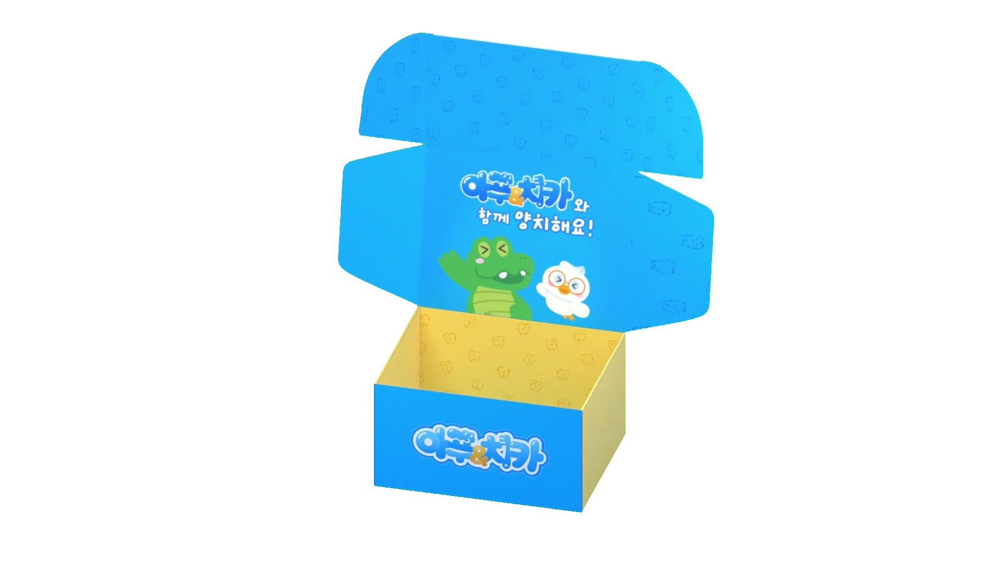
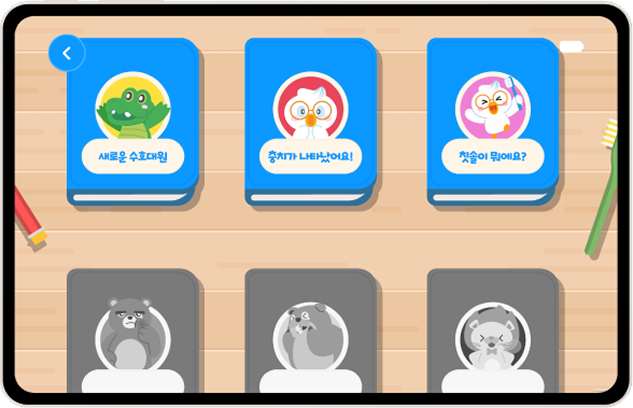
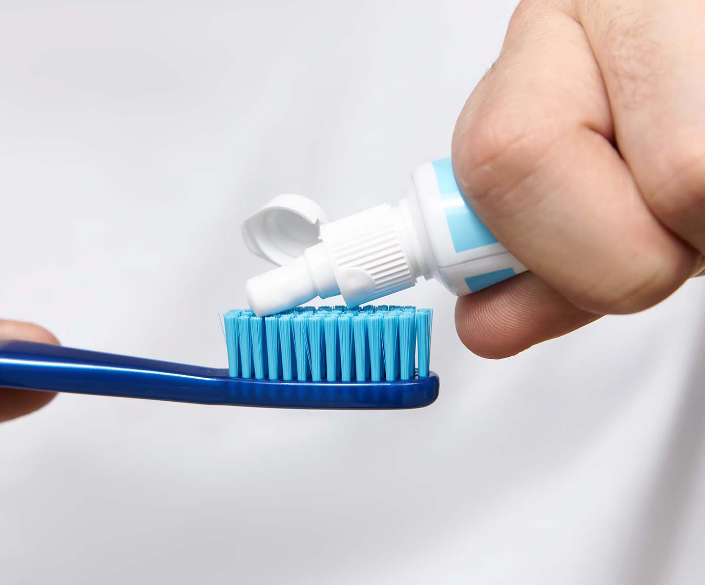

초기 관리 부족은

올바른 구강 관리를 위한 아동 교육 프로젝트
유치는 잠시 쓰는 치아가 아닌 영구치와 구강 발달에 영향을 주는 첫 치아입니다

초기 관리 부족은
영구치 배열에
검증된 양치 습관은
아푸치카는 양치를 처음 배우는 아이를 위해 애니메이션, 교구, AR 가이드를
하나의 흐름으로
연결한 아동 구강관리 교육 프로젝트입니다
아푸치카는 아이가 양치를 단순히 보는 데서 그치지 않고,
이야기와 교구, AR 가이드를 통해 직접 따라 할 수 있도록 설계했습니다.

아기 양치 어떻게 하나요?

아기 양치 어려워요.
어린이 칫솔은 어떤 걸 쓸까요?
매일 양치로 씨름하는 우리집

아푸치카는 애니메이션과 교구를 통해 양치의 필요성을 이해하고, 아이가 스스로 실천할 수 있도록 도와줍니다.
아푸치카와 함께 수호대원증을 만들어 봐요!
대원증 만들기집에서도 부담 없이 시작하는 아동 양치 교육

대여 신청하기
아이가 양치하는 걸 너무 싫어해요.
양치 시간은 왜 전쟁일까요.
양치만 하면 우는 아이 어떻게 하면 좋을까요?

아이가 양치하는 걸 너무 싫어해요.
양치 시간은 왜 전쟁일까요.
양치만 하면 우는 아이 어떻게 하면 좋을까요?